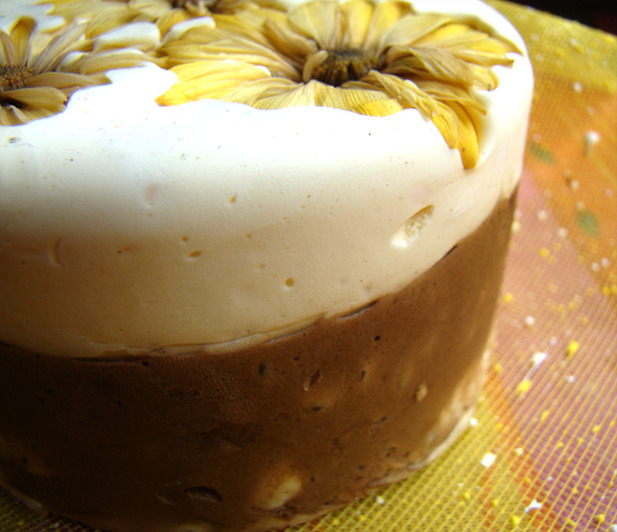

Мыло «Цветок календулы»

Описание
Предлагаем вашему вниманию очередной косметический продукт, обладающий массой полезных свойств, которые ему обеспечивает входящее в состав эфирное масло и отвар календулы. К безусловным достоинствам этого мыла следует также отнести мягкую нежную консистенцию и привлекательный вид, обеспечиваемый сухоцветами календулы. Это отличный подарок, сделать который вы можете себе и своим близким.
Состав
- Белая мыльная основа –50 грамм
- Эфирное масло шалфей мускатный - 1/3 чайной ложки
- Краситель пищевой гелевый коричневый – 2-4 капли
- Сухоцветы календулы – 1-2 столовые ложки
- Форма круг
- Миксер
Рецепт
- Приготовьте отвар из одной столовой ложки цветков календулы и 100 мл кипятка. Можно все это поместить в термос и оставить на 1-2 часа.
- Растопите половину мыльной основы на водяной бане или в микроволновой печи. Конечно, если у вас есть специальный прибор для плавления основы, это значительно упрощает задачу.
- Добавьте немного отвара календулы, половину от общего объема эфирного масла и 2-3 капли коричневого краситетеля.
- Не снимая основу с огня, взбейте ее миксером или венчиком до увеличения в объеме. При необходимости можно добавить еще немного отвара, но не перестарайтесь, так как тогда мыло будет хрупким.
- Поместите мыло в форму, заполнив ее примерно наполовину. Делать это нужно очень быстро, так как взбитое мыло быстро застывает.
- Растопите оставшуюся основу и точно так же, используя все те же ингредиенты и совершая те же шаги, приготовьте вторую часть нашего мыла. Только в этот раз красителя следует добавить меньше – примерно 1 каплю.
- Поместите второй слой взбитого мыла поверх первого и украсьте его цветками календулы, слегка «утопив их в мыле».
- Оставьте мыло застывать. Очень аккуратно выньте мыло из формы. Взбитое мыло достаточно хрупкое, поэтому проявите терпение.
- Теперь вы можете наслаждаться чудесным косметическим средством собственного приготовления.